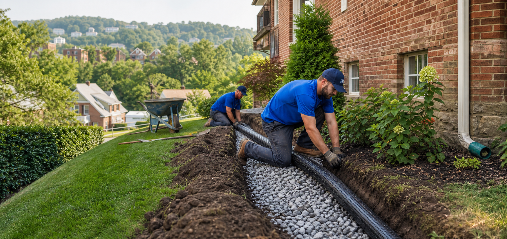
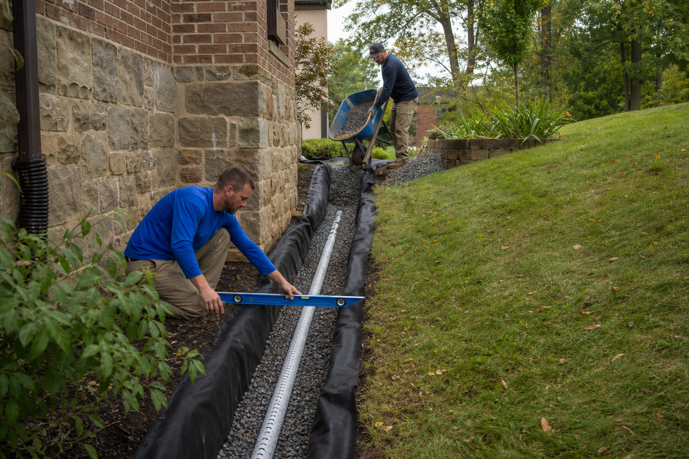
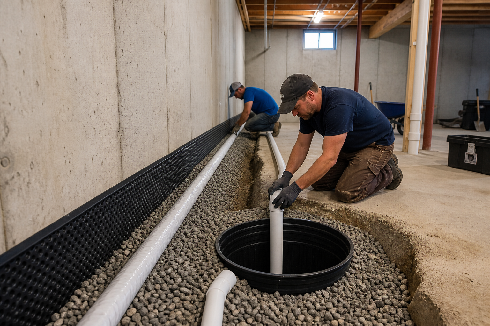

01
Outdoor
Outdoor
Drainage
Move water away from your home, yard, and hardscape with a system built for the site.

Outdoor Drainage Specialists
Drainage
For Pittsburgh Homes
Expert water-management and basement-protection solutions installed by a licensed, in-house crew.
One call. Every water problem.
Move water away from your home, yard, and hardscape with a system built for the site.
Relieve hydrostatic pressure and keep below-grade spaces reliably dry.
Greater Pittsburgh's drainage team
One call handles every drainage problem on your property — from soggy lawns to flooded basements. Our experienced team diagnoses where the water comes from, then builds a lasting path to move it safely away.
Get a free estimate

Protect your home from the ground up
Poor drainage does more than ruin a lawn. It threatens foundations, attracts mosquitoes, kills landscaping, and can lead to expensive structural repairs.
Redirect groundwater before pressure builds against walls and slabs.
Dry out saturated root zones and stop standing water.
Control concentrated runoff before it washes away soil and mulch.
Address water early, before damage compounds into a costly project.
Straight answers. Skilled work.
We make drainage work simple: an honest diagnosis, a written estimate, and one accountable team from the first shovel to final cleanup.
Simple, fast process
Tell us what is happening. We will diagnose it, price it clearly, and fix it right.
Tell us about your drainage problem in two minutes.
We diagnose the issue and provide a fair, written price.
Our in-house crew installs the drainage system — guaranteed.
No pressure. No subcontractors.
An honest crew that fixes drainage problems for good.
Problems we solve
Cause: Compacted soil, low spots, or grading that traps rainwater.
Solution: Re-grading with a French drain or catch basin to redirect it.
Cause: Downspouts, negative slope, or saturated soil pushing water toward the house.
Solution: Buried extensions, exterior drains, and proper grading.
Cause: Hydrostatic pressure from groundwater with nowhere to go.
Solution: Interior drain tile, sump systems, and safe discharge lines.
Cause: Subsurface saturation suffocating roots and breeding fungus.
Solution: A subsurface drain network that dries the root zone.
Cause: Concentrated runoff cutting channels through soil and mulch.
Solution: Swales, riprap, and engineered paths that slow water.
Cause: Hard surfaces shedding rainfall faster than soil can absorb it.
Solution: Channel drains connected to a buried drainage line.
Helpful answers
Not sure where to start? A short conversation can point you in the right direction.
412-850-4615The right system depends on where the water starts and where it can discharge safely. We inspect grading, soil, downspouts, foundation pressure, and low spots before recommending an interior drain, exterior French drain, surface drain, or combined solution.
Yes. Pittsburgh French Drain provides a free on-site diagnosis and a clear written estimate with no pressure.
Same-week scheduling is available across the Pittsburgh metro when the calendar permits. Call for the current schedule and the fastest available visit.
No. The work is completed by an in-house crew, giving you one accountable team from diagnosis through installation and cleanup.
Local crews. Same-week scheduling.
Also serving Squirrel Hill, Shadyside, Robinson Township, Moon Township, McCandless, Plum, Carnegie, Greentree, McKees Rocks, and nearby neighborhoods.
View all service areas →